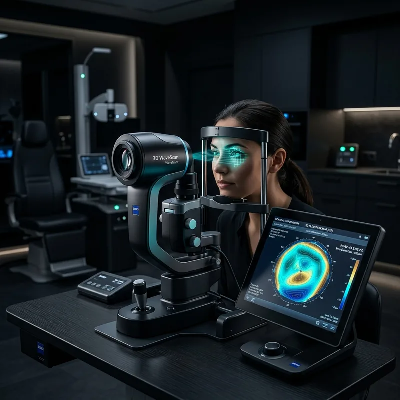
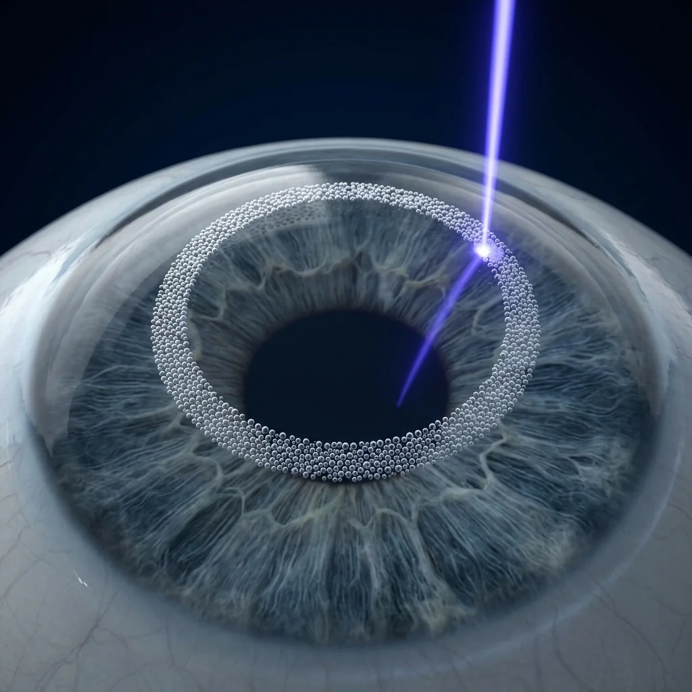
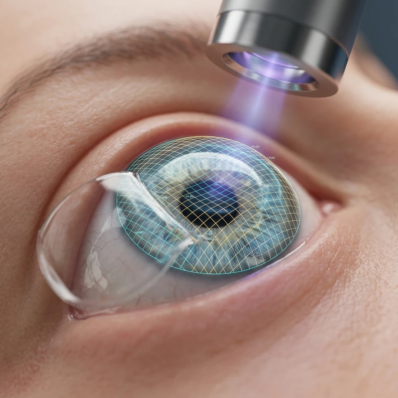

Your Procedure & Recovery Journey From 10-Second Laser to 24-Hour Clarity
A comprehensive anatomical walkthrough of New Jersey's premier dual-laser protocol: from diagnostic WaveScan mapping to microscopic osmotic flap adhesion and same-day recovery.
10 SecBlade-Free Flap / Eye
0.25 µmAblation Depth / Pulse
100%Stitch-Free Osmotic Seal
24 HoursReturn to Work & Driving
SURGICAL PROTOCOL STEP-BY-STEP
Inside the Laser Suite: 5 Steps to Clear Vision
Every procedure at Marano Eye Care is directed in person by Dr. Matthew Marano or Dr. Sherief Raouf at our state-of-the-art Livingston cleanroom suite. Review what occurs at each physiological step:
PHASE 01 // PRE-OPERATIVE MAPPING
Step 1: 3D WaveScan® Eye Mapping
Prior to touching your eyes with any surgical laser, we capture your unique optical fingerprint. 240+ microscopic lenslet sensors measure higher-order aberrations, while Scheimpflug 3D tomography constructs a 25,000-point elevation model of your cornea's front and back surfaces to guarantee structural candidacy.
✦ Clinical Advantage: 25× finer resolution than standard glasses prescriptions.

PHASE 02 // 1053nm INFRARED FEMTOSECOND
Step 2: Blade-Free Femtosecond Flap
Topical numbing eye drops ensure complete comfort with zero needles or injections. The iFS® femtosecond laser focuses ultra-fast infrared pulses into the corneal stroma, creating a micro-thin 100-micron flap with inverted bevel lock edges in just 10 painless seconds per eye.
✦ Patient Sensation: Mild gentle pressure for 10 seconds; zero blade cutting.
✦ Architectural Integrity: Inverted bevel edges lock back into place securely.

PHASE 03 // 193nm COLD UV PHOTOABLATION
Step 3: CustomVue® Laser Reshaping
With the flap gently folded back, the excimer laser delivers cold 193 nm ultraviolet photons that break microscopic molecular bonds, reshaping corneal curvature at 0.25 microns per pulse without thermal heat. Active 3D Eye Tracking monitors pupil motion 60 times/sec with automated sub-5ms pause safety.
✦ Sculpting Speed: Approximately 10 seconds of clicking laser pulses.
✦ 3D Iris Registration: Automatically compensates for seated-to-supine cyclotorsion.

PHASE 04 // ANATOMICAL REALIGNMENT
Step 4: Natural Stitch-Free Flap Seal
Your surgeon uses a micro-spatula to gently smooth the corneal flap back into its exact anatomical position. Natural endothelial fluid pumps immediately generate negative osmotic pressure, creating instantaneous suction that seals the flap borders within 3 to 5 minutes without stitches.
✦ Suture-Free: Zero stitches required; biological suction seals the bed.
Within 2 to 4 hours, superficial corneal epithelial cells migrate across the microscopic flap incision margin to create a watertight biological barrier. By the next morning (Hour 24), over 98% of patients achieve 20/20 clarity or better and are clinically cleared to drive and resume full work schedules.
✦ Day 1 Visual Acuity: 20/20+ distance vision confirmed at follow-up.
✦ Permanent Stability: Reshaped corneal stroma does not regress.
BIOLOGICAL HEALING SCRUBBER
Your First 24 Hours: Hour-by-Hour Recovery
Click across the recovery milestones below to review the anatomical progression from surgical dismissal through next-day 20/20 clarity:
HOUR 0 TO 2 // IMMEDIATE POST-OP
Immediate Post-Op: Rest and Eye Protection
Immediately following your procedure, clear protective eye shields are taped into place. Your eyes will feel watery with a mild scratchy sensation similar to a dry contact lens. We instruct all patients to return home and take a restful 2 to 3 hour nap with eyes closed to initiate rapid epithelial migration.
Patient Care Rule:Keep eyes gently closed during the drive home. Do not rub eyes under any circumstance.
PHYSIOLOGICAL RECOVERY STATUS
Epithelial Cell Seal:35% Adhesion
Distance Acuity:20/60 (Soft Focus)
Eye Drop Schedule:Antibiotic + Steroid 4x/day
CLINICAL PREPARATION PROTOCOL
Surgery Day Preparation & Guidelines
Our team provides detailed instructions to ensure your surgical day is calm, seamless, and completely comfortable:
1. Arriving for Your Procedure
Wear comfortable button-up clothing so shirts do not pull over the head post-surgery. Avoid facial lotions, perfumes, colognes, or eye makeup. Arrange for an adult family member or driver to escort you home.
2. Post-Op Eye Drop Schedule
You will be provided with prescription antibiotic (e.g., fluoroquinolone) and anti-inflammatory steroid drops to prevent infection and corneal edema. Frequent preservative-free artificial tears soothe the ocular surface.
BEGIN YOUR JOURNEY TO VISUAL FREEDOM
Schedule Your Free LASIK Consultation
Meet directly with Dr. Matthew Marano or Dr. Sherief Raouf at our Livingston, Denville, or Newark locations. Experience 1-on-1 personalized surgical care with complete clinical transparency.